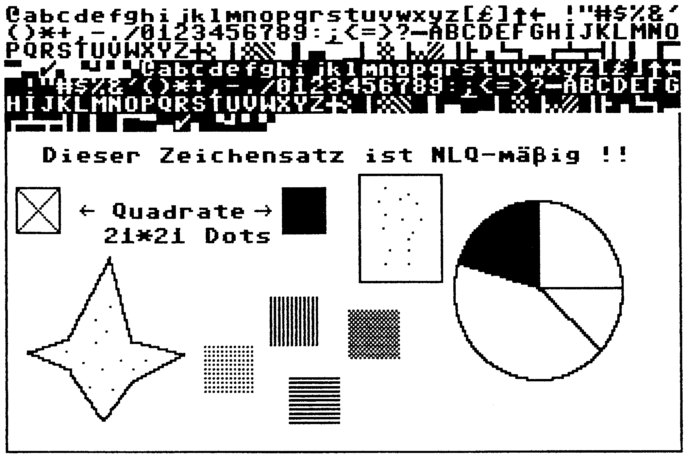

Neue Drucker-Routinen für Hi-Eddi
Jetzt kommen auch jene in den Genuß, Hi-Eddi-Bilder auszudrucken, die einen Star NL-10 oder einen GP 700 VC besitzen.
Welcher 64'er-Leser kennt ihn nicht— den Hi-Eddi, das fantastische Zeichen- und Malprogramm. Damit möglichst viele ihre produzierten Kunstwerke zu Papier bringen, folgen Druckeranpassungen für den Star NL-10 und für den Seikosha GP 700 VC, mit dem sogar farbige Hardcopies gedruckt werden können.
Hi-Eddi für Star NL-10
Die Assemblerroutine »Hi-Print (NL-10) (Listing ]) wird vom Hauptprogramm Hi-Eddi durch die Taäastenkombination <CTRL+P> nachgeladen. Am Hauptprogramm Hi-Eddi sind keine Änderungen erforderlich. Der Druckertreiber ist von der Bedienung und von der Funktion her absolut identisch mit dem Programm Hi-Print (FX-80) aus Ausgabe 1/85 beziehungsweise Sonderheft 6/85. Allerdings besteht keine Möglichkeit, den Drucker über eine Centronics-Schnittstelle am User-Port zu betreiben. Dafür wird mit einer Punktdichte von 1920 Dots/Zeile (beziehungsweise 960 Dots/Zeile für Großbilder) gedruckt. Dadurch ist der Ausdruck proportional zum Bildschirm. Ein Kreis auf dem Bildschirm entspricht exakt einem Kreis auf dem Papier (Bild ]). Ist der Ausdruck abgeschlossen, wird das Programm »Hi-Exe« in Overlay-Technik nachgeladen.

Hi-Eddi für Seikosha GP 700 VC
Auch diese Hi-Print-Version (Listing 2) arbeitet genauso wie der Druckertreiber aus den oben erwähnten Ausgaben. Folglich ist eine Änderung des Hauptprogramms Hi-Eddi nicht erforderlich. Da der Drucker GP 700 VC eine Farboption hat, wurde eine Routine integriert, die automatisch erkennt, ob Hi-Eddi im Schwarzweiß- oder Farbmodus betrieben wird.
Im Farbmodus ist Folgendes zu beachten. Da der C 64 »16«, der Drucker aber nur »8&«Farben darstellen kann, wurden die Farbnummern 8 bis 15 denjenigen von 0 bis 7 gleichgesetzt. Daher ist darauf zu achten, daß beim Konstruieren im Farbmodus entsprechende Farben (zum Beispiel Farbe 6 (Blau) und Farbe 14 (Hellblau)) nicht »nebeneinander« vorkommen.
Es lassen sich folgende Formate ausdrucken: klein —> 320 x 200 Punkte groß —> 640 x 400 Punkte
Außerdem besteht die Möglichkeit, zwei Bilder im Kleinmodus nebeneinander auszudrucken (640 x 200 Punkte). (W. Wirtz/St. Kirchhoff/ah) Drucer-